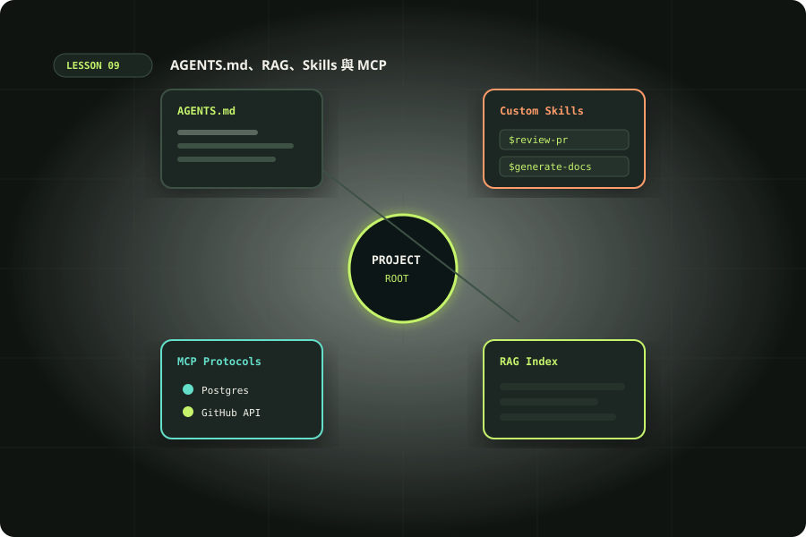

UNIT 09 · 120 MINUTES
讓 Codex 更懂你的意圖、
專案與工作習慣
把穩定偏好放在全域，把專案背景放在 repo，編目重要參考文件，必要時再用搜尋或 MCP 做檢索。理解 RAG 原理，學會讓 Codex 讀對文件、標出引用依據，並同步跨專案知識。
AGENTS.md：規則與路由Memories：可選回憶RAG：按任務取回資料Skills / MCP：流程與知識來源
入口提醒：以下路徑與配置針對本機 Codex host。ChatGPT 網頁 Projects 使用自己的上傳資料、指示與來源；它不直接讀取本機 AGENTS.md、.codex 或資料夾。個人偏好和記憶也不能假設跨入口同步。
查看完整比較 →

單元 09 核心圖解：AGENTS.md、RAG、Skills 與 MCP素材庫 ↗ 設定怎麼實際套用？閱讀 config.toml、設定優先序與可複製範本。
閱讀進階指南 →120 分鐘安排
10 分意圖與背景盤點
15 分個人／專案／全域層
20 分RAG 與文件檢索
15 分Skills、MCP 與資料來源
45 分知識索引與實作
15 分測試、同步與回顧
本單元計時00:00:00
THREE LAYERS
先選對客製化工具
AGENTS.md · 專案指示檔穩定且每次任務都適用的程式慣例、測試命令、資料限制和審查規則。
Skill · 可重用技能多步驟、重複出現的工作流程，附上範本、腳本或參考資料。
MCP · 外部工具協定把 Codex 接到即時外部資料或動作；需要考慮身份驗證、權限和信任。
簡單判斷：「每次都要遵守」→ AGENTS；「每次都要照步驟做」→ Skill；「要連外部系統查資料或動作」→ MCP。
AGENTS.MD DISCOVERY
AGENTS.md 怎麼被套用？
Codex 會從全域設定和目前專案路徑尋找指示，並把沿途規則合併。較接近目前工作的子目錄規則可補充更具體要求；存在 override 檔時也會影響同層規則。指示檔有合併大小限制，長篇流程不該全部塞在根檔。
Global~/.codex/AGENTS.md 放跨 repo 個人偏好；Memories 是可選的個人回想層，不取代持久規則。
Repo root產品背景、共同命令、架構慣例、安全界線和參考文件索引。
Nested特定 package 或 team 的局部規則。
好規則要可執行：「保持程式碼乾淨」太抽象；「新增 API 時同步更新 openapi.yaml，執行 pnpm test:api」更容易遵循和驗證。
RAG · RETRIEVAL-AUGMENTED GENERATION
RAG：不是把所有文件塞進去，而是按任務取回依據
RAG（檢索增強生成）先從外部資料找出與目前問題相關的內容，再把片段加入這次模型脈絡，讓回答根據來源生成。開發情境的來源可以是需求、ADR（架構決策紀錄）、API 規格、設計系統、事故報告或程式範例。
1 · 整理來源選權威、可讀、可更新的文件
2 · 檢索候選依任務／關鍵字／語意搜尋
3 · 取回片段挑相關章節與目前版本
4 · 引用驗證回答標示來源路徑與章節
小型 repo：索引式檢索用 docs/INDEX.md 列出要做哪種任務該讀哪些文件。AGENTS.md 說明先看索引、按任務挑選，並回報引用路徑。這是成本低且容易除錯的 RAG 起點。
大型／跨系統：搜尋服務文件很多或常變動時，才考慮全文／向量搜尋或 MCP 知識服務。要求回傳文件標題、版本、原始連結和相關片段。
不要假設 Codex 已自動索引所有文件。AGENTS.md 中提到某路徑是路標，不代表內容已載入。需明確要求讀取，或提供真的能搜尋該資料的工具／MCP。RAG 可能命中舊版本，仍須核對原文。
DEVELOPER INTENT · 個人與專案脈絡
怎麼讓 Codex 更懂你的意圖、背景和習慣？
產品意圖使用者是誰、主要任務是什麼、怎樣算成功；寫清楚已知取捨與未決問題。
技術脈絡模組邊界、資料流、架構決策、相容性要求和不採用某方案的原因；連到 ADR 或系統圖。
團隊慣例真實 build/test 命令、命名、錯誤處理、審查重點；以好的程式範例說明，不只寫「保持乾淨」。
個人偏好慣用語言、回覆長度、先探索或先詢問、是否先出計畫。跨專案偏好放全域檔，專案例外留在 repo。
限制與非目標不可新增依賴、不可改公開 API、不可用生產資料等；未知時要問什麼、不能猜什麼。
回饋迴圈重複糾正的穩定習慣才寫成規則；一次性偏好不要變成全域要求。
分層原則：每個專案都適用 → 全域 AGENTS；此 repo 才適用 → repo AGENTS / docs；固定多步流程 → Skill；需要即時外部資料 → MCP / 檢索服務；個人過往背景 → 可選 Memories。重要團隊規則不要只留在 Memories。
REFERENCE ROUTING · FILE CITATIONS
指定 Codex 讀取並引用你提供的參考檔
做一份參考文件索引，明確標註適用任務、權威順位、版本和更新日期。任務開始時要求 Codex 先讀索引，只取回與本次變更相關的來源；文件衝突時列出原句與路徑，請你裁決。把引用路徑和章節納入最後交付格式。
理解題：AGENTS.md 列出十份參考文件，代表每次任務都自動全文讀完了嗎？
GLOBAL · CROSS-PROJECT · SYNC
全域使用、跨專案共用和同步方式
個人全域~/.codex/AGENTS.md 放你跨 repo 的工作偏好；~/.agents/skills/ 放通用流程。可用私有 dotfiles Git repo 備份，在新機器安裝到對應位置。不要同步 token、session 或機器專屬絕對路徑。
單一 repo／團隊把 AGENTS.md、docs 和 repo Skills 放在同一 Git repo，讓 PR 審查變更與歷史。巢狀指示只放目錄特有規則。這是專案知識最直接的同步方式。
多 repo 共用資料建立版本化 engineering-playbook repo。各專案用 Git submodule 固定版本，或用同步腳本選擇性複製至 docs/references；索引註明來源 commit／版本，並定期檢查漂移。
跨平台即時知識資料散落多系統且常更新時，考慮 MCP 知識服務。按使用者權限搜尋，回傳來源連結與版本。不要把私有文件索引開放給無權限的工作區。
Single source of truth：指定權威原件和維護人；其他位置是只讀鏡像或固定版本副本。更新留下來源版本、同步時間和差異檢查，不要人工同時維護多份副本。
同步策略抽選
私有 dotfiles repo 管理全域規則與 Skills；新電腦 clone 後安裝。先檢查同步內容，秘密資訊交由 secret manager。
專案規則與程式文件一起 commit；透過 PR 更新，新增規則時說明適用範圍和驗證方式。
submodule 固定版本、升級明確可審；同步腳本利於精選副本但需檢查 drift；MCP 適合即時跨系統查詢。
SKILLS AND MCP
Skill 和 MCP 的邊界
每週資料匯入是重複流程：檢查欄位 → 正規化 → 去重 → 驗證筆數 → 匯出差異摘要。把 SOP、範本與必要腳本封裝成 Skill，讓任務按同樣步驟完成。
Skill 不是服務帳號，也不會自帶權限；它提供工作流程說明和相關資源。
查內部工單或產品文件需要外部系統的即時資料，可設定 MCP server（伺服器）提供可控工具。
先用唯讀需求，確認會暴露哪些資料、如何登入、哪些寫入行為要批准；不要因為連上 MCP 就假設工具都可信或安全。
本機 Codex App 的 Memories 可在 Settings → Personalization 啟用；官方文件說明它預設關閉，互動 Codex CLI 可用 /memories 控制目前 chat 是否使用或貢獻回憶。Memories 是方便回想的輔助層；必須穩定套用的個人偏好寫在全域 AGENTS.md，團隊規則寫在 repo 文件。
LAB / 35 MIN
建立一份有效的 AGENTS.md
- 挑一個 repo，問 Codex 哪些操作規則目前未知、哪些模式重複出現。
- 你確認真實命令和規範後，只選 5–8 條最有影響的規則。
- 放入根層 AGENTS.md：用途、建置 / 測試命令、風格、資料界線、交付格式。
- 如果某子目錄有特殊規則，再建置局部指示；避免重複和互相矛盾。
- 開一個新 Codex session，要求它摘要已載入規則，並用一個小任務驗證。
- 發現規則太長或互相衝突時，先精簡與排序再增加內容。
把一次工作教訓轉成 Skill 的判準：同樣流程已重複多次、輸入和輸出穩定，而且未來能讓別人使用。
COPYABLE STARTER
簡短規則範本
情境題：「每次做 PR 都要先跑 pnpm test，之後回報沒跑的檢查」最適合放哪裡？